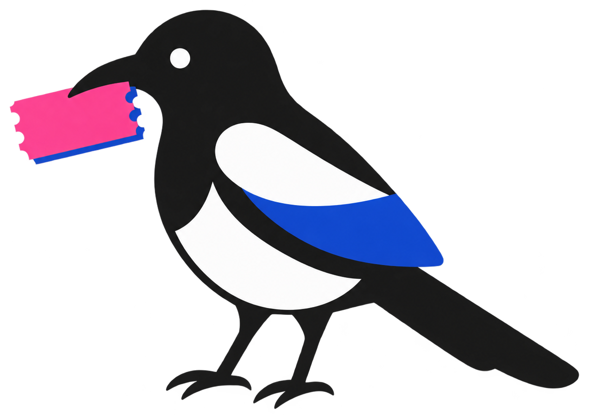
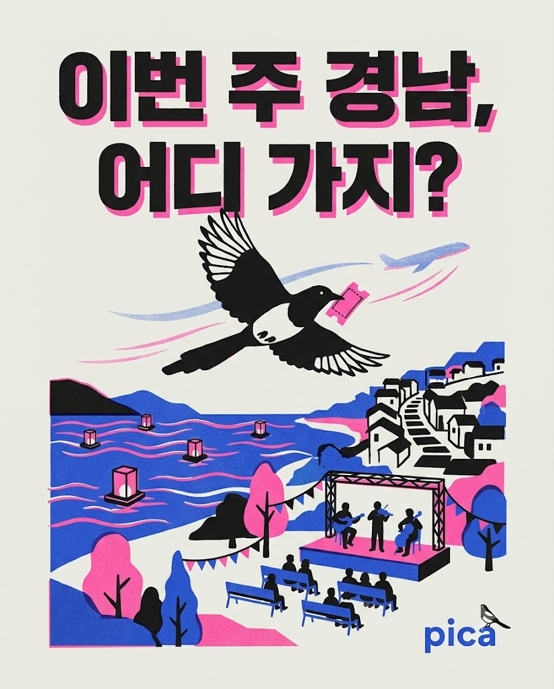
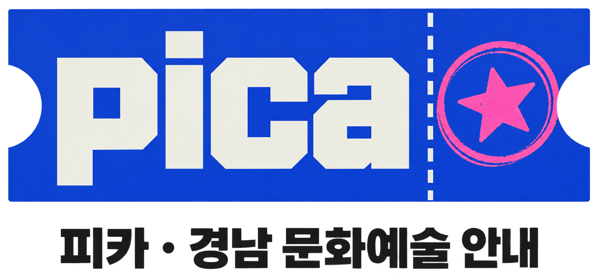
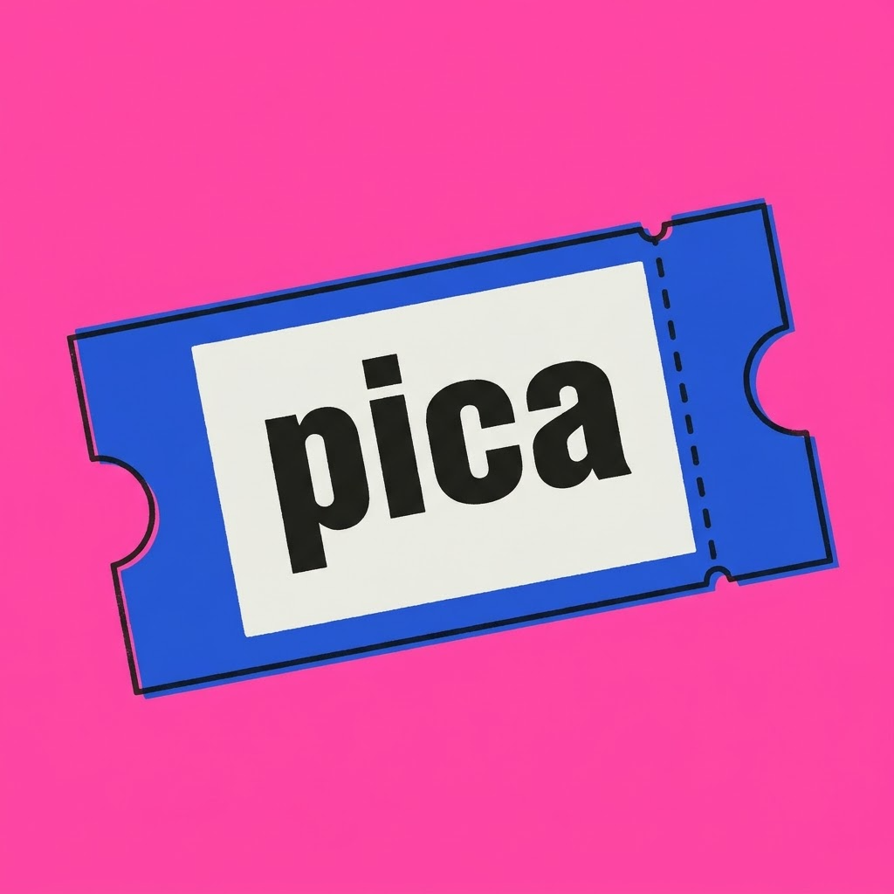
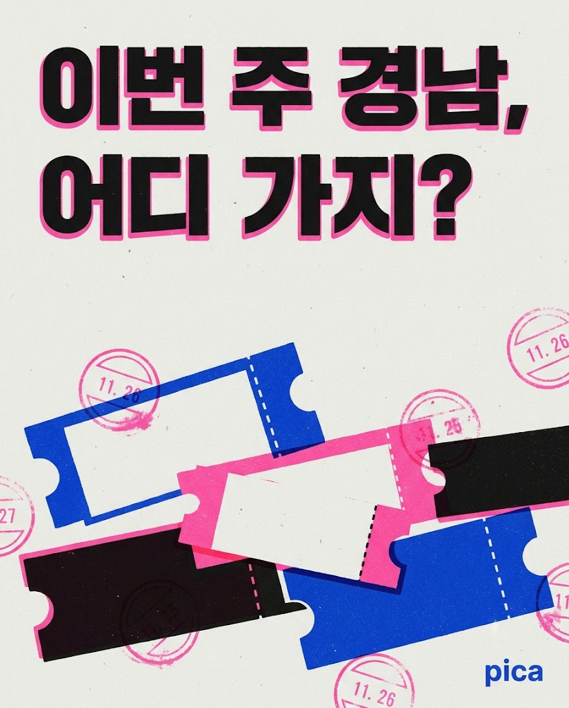
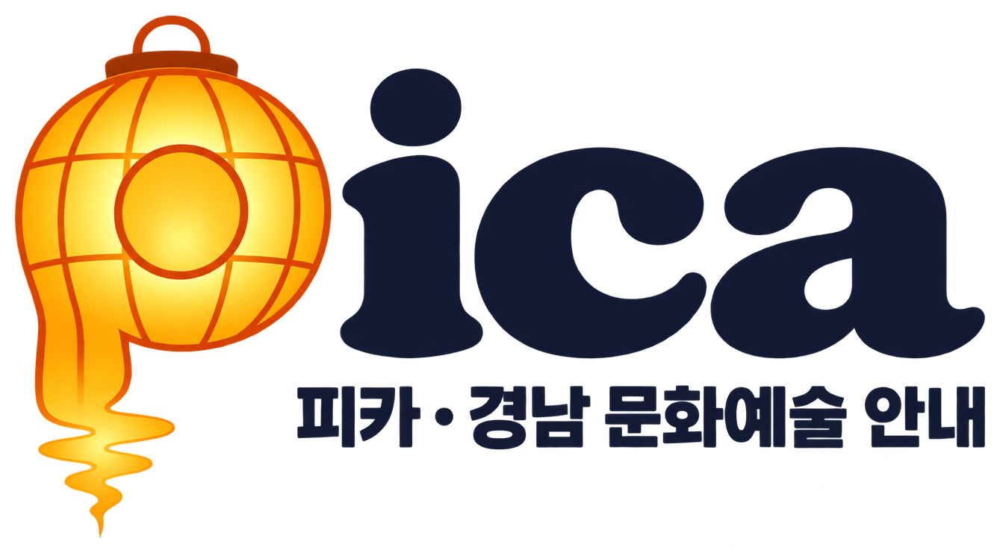
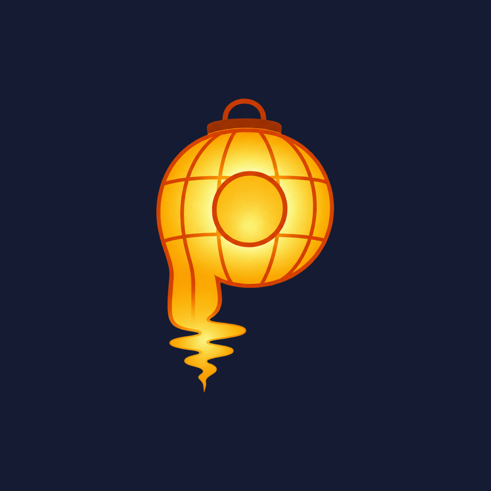
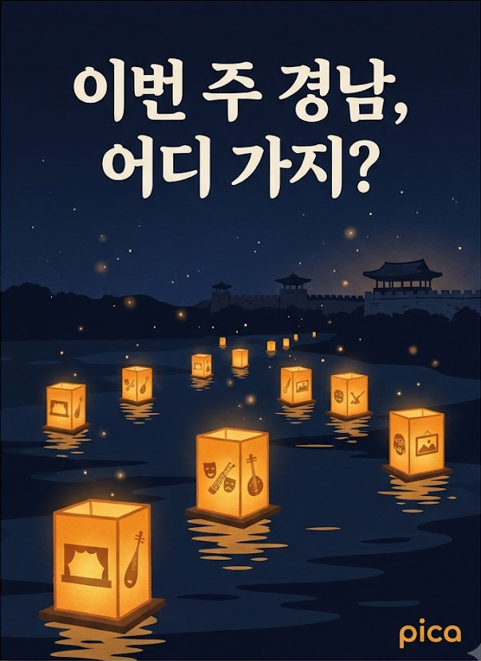

pica 브랜드 시안 3종
피카(pica)는 픽아트의 준말이다. 같은 이름을 세 가지 상징으로 풀었다. 각 시안은 로고, 인스타그램 프로필, 키 비주얼 한 벌씩이다. 이미지는 운영자 계정의 ChatGPT·Gemini로 만들었다.
까치 전령
Pica는 까치의 학명 속 이름이다. 까치는 반가운 소식을 전하는 새로 알려져 있다. 분홍 공연 티켓을 문 까치가 이번 주 가까운 곳의 문화 소식을 물어다 준다.



좋은 점
- 이름(Pica = 까치)과 상징이 바로 이어져 이야기가 생긴다.
- 캐릭터로 키울 수 있다. 릴스·스티커·굿즈에 까치가 등장할 수 있다.
- 지금 사이트의 리소 색과 그대로 맞는다.
걸리는 점
- 새 로고는 흔한 편이다. 티켓을 꼭 물려 둬야 문화 안내로 읽힌다.
- 작은 크기에서 흰 배 무늬가 뭉칠 수 있어 벡터로 다시 그릴 때 단순화가 필요하다.

날짜 도장 티켓
로고 자체가 공연 티켓이다. 절취선과 고무도장은 "날짜가 주인공"이라는 사이트 원칙, 카드의 날짜 표와 같은 언어다. 그림 없이 글자와 모양만으로 선다.


좋은 점
- 사이트 카드(날짜 표·점선 절취선)와 한 몸처럼 보인다.
- 그림이 없어 벡터로 옮기기 가장 쉽다.
걸리는 점
- 티켓 모양 로고는 예매·공연 앱에서 흔하다. 피카만의 이야기는 약하다.
- 상징이 사물이라 캐릭터로 키우기 어렵다.

남강 유등
p 글자가 진주 남강의 한지 등불이다. 밤하늘 남색 위에 호박색 불빛 하나. 사이트에 저장해 둔 lantern 테마 값과 같은 색이다.


좋은 점
- 셋 중 가장 따뜻하고 분위기가 있다.
- 경남을 대표하는 장면이 한눈에 읽힌다.
걸리는 점
- 진주 유등에 묶여 다른 시군 행사에는 덜 맞는다.
- 지금 사이트(밝은 리소)와 색이 반대라 고르면 사이트 테마도 바꿔야 한다.
- 등불의 입체감·빛번짐은 작은 크기와 흑백 인쇄에 약하다.

비교
| 기준 | A 까치 전령 | B 날짜 도장 티켓 | C 남강 유등 |
|---|---|---|---|
| 이름과의 연결 | Pica = 까치 | 없음 | p = 등불 |
| 지금 사이트와 맞음 | 그대로 | 그대로 | 테마 교체 필요 |
| 경남 전체 대표성 | 지역 무관 | 지역 무관 | 진주 중심 |
| 캐릭터·콘텐츠 확장 | 캐릭터 가능 | 사물 | 계절·밤 행사 |
| 작은 크기·흑백 | 단순화 필요 | 가장 강함 | 빛번짐 약함 |
| 흔함 | 새 로고는 흔하나 티켓을 문 까치는 드묾 | 티켓 로고는 흔함 | 유등은 진주시·축제 홍보물과 겹침 |
추천: A 까치 전령
이름의 뜻(까치)과 하는 일(소식 전하기)이 한 그림에 들어가는 시안은 A뿐이다. 사이트의 리소 색을 그대로 쓰므로 바꿀 코드도 없다.
B의 티켓·도장은 버리지 말고 A의 보조 요소로 쓴다. 게시물 표지의 날짜 칸, 스티커, 마감 표시에 쓰면 된다. C의 유등은 진주 남강유등축제 같은 시즌 게시물 특집 표지로 남겨 둔다.
이미지 안의 한글 문구(가로 로고의 "경남 문화예술 안내", 키 비주얼의 "이번 주 경남, 어디 가지?")는 옛 문구다. 브랜드 자리에 '경남'을 내세우지 않는 규칙에 따라 고른 시안은 "가까운 공연·전시·축제", "이번 주, 어디 가지?"로 다시 만든다. 모든 이미지는 AI로 만든 시안이다. 해상도가 1024~1536px이고 상표 등록이 어렵다. 고른 시안은 사람이 벡터로 다시 그려 원본으로 삼는다. Gemini 이미지의 ✦ 워터마크는 지웠지만 눈에 보이지 않는 AI 표식은 남아 있다.